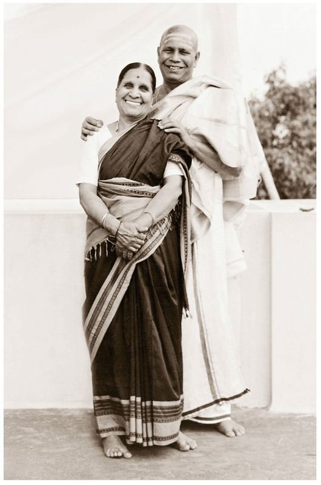

SRI KRISHNA PATTABHI JOIS (1915–2009) WAS BORN ON THE FULL MOON DAY of July in the small village of Kowshika, in a district of Hassan, in Karnataka State, South India. Kowshika remains largely unchanged since Guruji spent the first thirteen years of his life there. Then, as now, its three old temples were fixtures in the daily lives of sixty to seventy hardworking village families. Kowshika began to receive electricity only in the 1980s; in Guruji’s youth a man with a bicycle was considered rich.
Guruji’s father was an astrologer, priest, and landholder. His mother took care of the house and the nine children—five girls and four boys—of whom Jois was the fifth. From the age of five he was instructed in Sanskrit and rituals by his father, as were all Brahmin boys. Later he began studies at the middle school in Hassan, four or five kilometers from Kowshika. No one else in his family had learned yoga or even professed interest in it. In those days in India, yoga was considered an esoteric practice suitable for monks, sadhus, and sannyasis but not for the householder, who might lose all worldly interest and abandon his family by undertaking the practice.
In the sacret text of the yogis, the Bhagavad Gita, Krishna proclaims that one comes to yoga in his life only by having practiced it in a previous life, and is pulled toward it against one’s will, as toward a magnet—a verse that Guruji was very fond of quoting. It is this type of pull that must have led Guruji to attend a lecture-demonstration a friend told him was being given at the Jubilee Hall of Hassan’s middle school in the Indian month of October–November 1927. Jois was amazed by the asanas, and by the strong, graceful yogi jumping from pose to pose. Although he didn’t understand the lecture, and it was quite some time before he understood the method and philosophy, he liked the yoga and decided to learn it himself. The next day he rose early and went to the house where the yogi was staying. Bravely for a boy of only twelve, he requested to be instructed in yoga. The yogi gruffly demanded of him, Who are you? What is your name? Who is your father? What does he do? Jois dutifully replied, and was told to come back the next day. He began what was to be a twenty-five-year period of study with the great yogi Sri T. Krishnamacharya.
For two years Jois remained in Kowshika and practiced with Krishnamacharya every day. He was young, his body was flexible, and he quickly learned all of the asanas. Krishnamacharya was pleased, and used him to perform demonstrations. Jois never told his family he was practicing yoga. He would rise early, go to practice, and then go to school. In 1930, Jois’s father performed his Brahmin thread ceremony—the initiation through which all Brahmin boys pass into adulthood and into their spiritual life. Around this time, Krishnamacharya also left Kowshika, to continue spreading his teachings of yoga. Soon afterward, without informing anyone, Guruji left Kowshika for Mysore, with two rupees in his pocket, to attend the maharaja’s Sanskrit College. For one or two years he begged for food and slept in the dormitory room of a friend. It was three years before he wrote to tell his father where he was. Jois remained at the College from 1930 to 1956, studying Sanskrit and then the Vedas, and eventually earning a professorship in Advaita Vedanta. He taught there until 1973, when he left to devote himself fully to teaching yoga at his yoga shala.
His reunion with Krishnamacharya and the beginning of his association with the Maharaja of Mysore took place in 1931. Without knowing who the visiting yogi was, Jois attended a yoga demonstration at the Sanskrit College. To his surprise, he discovered it was his own guru, Krishnamacharya. He was very happy, and prostrated himself at the feet of his teacher. Also present at the demonstration was a minister from the Maharaja of Mysore’s palace. The maharaja, Krishna Rajendra Wodeyar, who had a great affinity for yoga and spirituality, was ill. When he heard through his minister about the visiting yogi, he sent for him. Krishnamacharya, with his vast knowledge and healing abilities, was able to cure the maharaja where others had failed. The maharaja became Krishnamacharya’s patron, and established a yoga shala for him on the palace grounds. Krishnamacharya was to remain in Mysore for the next twenty-two years.
The maharaja became a great patron of yoga, sending Krishnamacharya, along with Guruji and other students at the yoga shala, all over India to perform demonstrations, study texts, and research yoga schools and styles. Guruji says today that after having traveled around India for many years, Krishnamacharya is the only man he ever met who had full knowledge of true yoga methods.
On occasion, the maharaja, who was fond of yoga demonstrations, would summon Guruji and his friend and fellow student, Mahadev Bhatt, to the palace. At 10 p.m., an attendant would come to their room and command a demonstration for the maharaja at four a.m. At three a.m., Guruji and Bhatt would get up and take cold baths before a car would come to collect them. The maharaja would tell them which asanas he wanted to see; he particularly liked Kukkutasana and Bakasana B. Afterward, the maharaja himself would do some asanas, and then send them home by car. He would give them thirty-five, forty, or fifty rupees—in those days quite a large amount of money. He would tell them, “Keep this money, don’t tell your Guru.” On the maharaja’s birthday one year, both Guruji and Bhatt were presented with silk Hanuman kacchas to wear during practice. Guruji still speaks today of what a kind man the maharaja was.
Guruji would occasionally assist Krishnamacharya in class and teach if he was late. One day the maharaja, who would sometimes attend class at the yoga shala, saw this. One week later the maharaja asked Jois to teach yoga at the Sanskrit College. Guruji replied that he had come to Mysore only to study. The maharaja offered him a salary, a scholarship to the college, and room and board. Since Guruji was still begging, this was a lucky opportunity. He told the maharaja he first must ask for Krishnamacharya’s blessing. On March 1, 1937, Jois began to teach at the Sanskrit College. When asked if he ever received a teaching certificate, he replied yes, and his test was very difficult: Krishnamacharya gave him one sick man and said, “Fix him!”
Guruji has often spoken about a text called the Yoga Korunta, an ancient manuscript on ashtanga yoga, which had been the basis of the practical lessons on yoga taught to him by Krishnamacharya. Attributed to the sage Vamana, it was one of the many texts taught orally to Krishnamacharya, which he learned by heart during the seven and a half years he spent living with his teacher, Rama Mohan Brahmachari. Korunta means “groups,” and the text was said to contain lists of many different groupings of asanas, as well as highly original teachings on vinyasa, drishti, bandhas, mudras, and philosophy. Before Krishnamacharya was sent off into the world to teach, around 1924, he was told that he could find this text in the Calcutta University Library. According to Guruji, who has never seen the text and doubted that it still exists, Krishnamacharya spent some time in Calcutta researching this book, which was badly damaged and had many missing portions. When Guruji began his studies with Krishnamacharya in 1927, it was the methods from the Yoga Korunta that he was taught. Although the authenticity of the book would be extremely difficult, if not impossible, to validate today, it is generally accepted that this is the source of ashtanga yoga as taught by Pattabhi Jois.
In 1948, in his home in Lakshmipurum, Guruji established the Ashtanga Yoga Research Institute, with the aim of experimenting with the curative aspect of yoga as taught to him by Krishnamacharya and the ancient texts. The house at that time had only two rooms and a kitchen and bath, and it was not until 1964 that he built an extension in back for the yoga hall, and a resting room upstairs.
About this time a Belgian named André van Lysebeth found his way to Jois. Van Lysebeth knew Sanskrit, and spent two months studying the primary and intermediate asanas. Among the many books he was to write was one called Pranayama, which included a photo of Guruji along with his name and address. It was through van Lysebeth’s book that his whereabouts became known in Europe, and thus the Europeans were the first to come from the West specifically to study with Guruji. In 1973, the first Americans came, after Guruji’s son Manju demonstrated yoga at Swami Gitananda’s ashram in Pondicherry.
Guruji’s first trip to the West was by invitation of Marie Helena Bastidos to a yoga conference she was holding in South America in 1974, where he delivered a talk on yoga in Sanskrit, which was translated into several languages. In 1975 he traveled to California with Manju. He has said on many occasions that only twenty or thirty students practiced ashtanga yoga in America then, but, “gradually, gradually, in twenty years, it will be fully spreading.” Through his many trips to America over a thirty-year period, Guruji’s teaching has borne fruit, and his influence here, direct and indirect, is central to the growth and popularity of yoga in America today.
A portion of the record we have of Guruj i’s knowledge of yoga comes to us in the form of his writings and photographs. His main treatise, this small book, Yoga Mala, outlines the timeless nature of ashtanga yoga practice. Guruji began work on it in 1958, writing the entire text by hand, little by little, over a two- to three-year period, in the afternoons while his family rested. It was first published in India in 1962 by one of his students, a coffee planter in Coorg. Mala is a Sanskrit term that means garland. In India, there are many different kinds of malas. There are japamalas, made up of sacred beads strung on a thread which are used in prayer for counting and keeping focused on the repetition of a mantra. There are pushpa-mala s, which are garlands of vivid flowers, smelling of jasmine and other scents, that are strung in the form of wreaths and offered in worship to deities in homes and temples. Guruji here offers another kind of mala, which is ancient in tradition, as sacred as a prayer, and as fragrant as flowers. His mala is a garland of yoga, in which each vinyasa is like a sacred bead to be counted and focused on, and each asana is like a flower strung on the thread of the breath. Just as a japamala adorns the neck and a pushpamala adorns the gods, so too does this garland of yoga, when diligently practiced, adorn our entire being with peace, health, radiance, and, ultimately, self-knowledge.
The translators have tried to remain as faithful as possible to the original, both in style and content. Guruji has rewritten small sections, corrected errors, and made additions to his original work. For example, descriptions of the yoga postures known as Prasarita Padottanasana (D) and Janu Shirshasana (B & C), which did not appear in the original, have been included here. Some portions of the book have also been rewritten for the sake of clarity, and footnotes have been provided to aid understanding. Every change and addition, however, has been reviewed by Guruji, who has provided information for some of the emendations, and dictated others.
Guruji went against the grain of his times by dedicating his life to teaching yoga. Perhaps that is why he never told his family he was doing yoga, and why he left for Mysore without a word. Maybe they would have protested, tried to talk some sense into his head. It is clear for Guruji there was never any question. He taught without hesitation, neither for fame nor money, although these things may have come to him. Pattabhi Jois was a shining example of pure dedication, of what it takes to keep the light of an ancient tradition burning brightly.
—Eddie Stern
New York City
March 10, 2010
